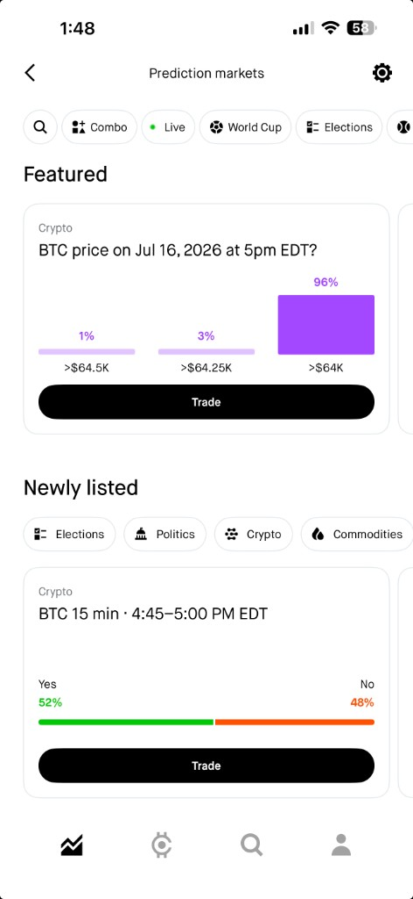

Prediction markets experience—featuring high-probability contracts used to guide first-time traders toward clearer, lower-risk first trades.
Executive summary
I identified a first-trade rejection funnel where 1 in 5 trades failed and 90% of those users churned to competitors. Through qualitative interviews, MaxDiff segmentation, and targeted messaging, I recovered rejected traders at scale and quantified how early outcomes reshape long-term LTV.
Situation
The Event Contracts and Prediction Markets division at Robinhood was experiencing noticeable drop-offs in the first-time user flow—specifically right after signup and first-trade friction. Recruiting users who have already churned or failed to complete a first trade is notoriously difficult to study qualitatively.
Specifically, I identified the single biggest barrier in the funnel: 1 out of every 5 first-time trades—representing roughly 450,000 customers each month—was being rejected due to peer-to-peer matching mechanics on the backend exchange. 90% of those users abandoned the platform entirely and defected to a competitor.
Task
Isolate the exact friction points causing these drop-offs, understand the needs of disparate user archetypes within the same funnel, and implement structural changes to stabilize retention and recover rejected traders.
Approach
- Targeted Qual Recruitment & Competitor Insights — I successfully recruited and conducted 1-on-1 interviews with users who abandoned the platform after a first-trade rejection. I discovered that many of them had defected directly to our primary competitors because they interpreted the backend rejection as a platform failure.
- Behavioral Segmentation — I uncovered two distinct mental models in the funnel: newly acquired sports bettors with zero brokerage/crypto experience, and existing Robinhood users exploring prediction markets as sophisticated traders.
- MaxDiff Survey — I designed and deployed a Maximum Differential (MaxDiff) quantitative survey to systematically rank and isolate each segment’s unique informational needs.
- Friction Remediation & UI/UX Messaging — I recommended and designed targeted messaging and navigational changes to explain the backend rejection in plain language and guide users immediately back into the first-trade flow.
- Longitudinal Methodology & LTV Mapping — To understand the long-term impact of early user experiences (first impressions), I initiated and designed a 3-month longitudinal tracking study evaluating the behavioral patterns of users based on their initial trading outcomes (winning vs. losing their very first contract).
Outcome
- Recovery & Revenue Impact — My messaging and navigational recommendations successfully recovered 85% of the rejected first-time traders who would have otherwise churned, directly generating $17M in additional monthly revenue and ~900K net new customers.
- Discovery of “Power Traders” — Through matched-sample testing against demographics like age, I proved that customers who overcame a first-trade rejection via the new messaging went on to trade at 15% higher volumes than those whose very first trade succeeded. Overcoming the initial barrier triggered highly active “power trader” behavior.
- Infrastructure Advocacy — Despite the recovery rate, I used these insights to initiate major cross-functional efforts to systematically reduce backend rejected trades, proving to engineering that a friction-free initial experience is vital for long-term customer health.
- LTV Quantification & Loss Impact — Through my 3-month longitudinal study, I identified that losing a first trade reduces a customer’s Lifetime Value (LTV) by 20% to 25%.
- Strategic Onboarding & Responsible Trading — Based on the LTV loss data, I recommended tailoring specific types of event contracts and highlighting details for first-time customers to direct them toward high-probability, lower-risk trades for their first transaction. This research successfully launched an ongoing, company-wide initiative focused on promoting responsible trading (e.g., preventing brand-new customers from immediately placing low-likelihood, “long-shot” trades).